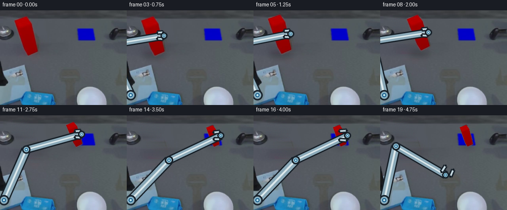
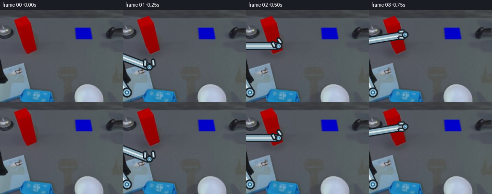

CODING AGENTS AS PIXEL WORLD MODELS
traex/DeepSeek-V4.1-Flash · common50_0045
点击播放 · 原生 RGB 像素
逐轮保存的候选
回放视频、检查图与代码变化。
每份候选均可单独播放。实际图片检查记录在下方工具轨迹中。
候选 01播放与检查图
点击播放 · 原生 RGB 像素


展开代码变化
--- 上一保存版本
+++ 本次保存版本
@@ -0,0 +1,341 @@
+from pathlib import Path
+
+import numpy as np
+from PIL import Image, ImageDraw, ImageFilter
+
+import artifact_io
+
+
+ROOT = Path(__file__).resolve().parent
+W, H = 256, 192
+N = 20
+FPS = 4
+
+
+def smoothstep(x):
+ x = np.clip(x, 0.0, 1.0)
+ return x * x * (3.0 - 2.0 * x)
+
+
+def dilate(mask, radius):
+ result = mask.copy()
+ for _ in range(radius):
+ grown = result.copy()
+ grown[1:] |= result[:-1]
+ grown[:-1] |= result[1:]
+ grown[:, 1:] |= result[:, :-1]
+ grown[:, :-1] |= result[:, 1:]
+ result = grown
+ return result
+
+
+def blur_alpha(alpha, radius):
+ image = Image.fromarray(np.clip(alpha * 255.0, 0, 255).astype(np.uint8))
+ image = image.filter(ImageFilter.GaussianBlur(radius))
+ return np.asarray(image).astype(np.float32) / 255.0
+
+
+def make_object_matte(source):
+ rgb = source.astype(np.float32)
+ r, g, b = rgb[..., 0], rgb[..., 1], rgb[..., 2]
+ yy, xx = np.indices((H, W))
+ score = r - 0.5 * (g + b)
+ roi = (xx >= 20) & (xx <= 90) & (yy >= 5) & (yy <= 100)
+ mask = (
+ roi
+ & (r > 54.0)
+ & (score > 1.5)
+ & (r > g + 5.0)
+ & (r > b + 4.0)
+ )
+ mask = dilate(mask, 1)
+ alpha = np.clip((score - 0.5) / 34.0, 0.0, 1.0)
+ alpha = np.where(mask, np.maximum(alpha, 0.42), 0.0)
+ alpha = blur_alpha(alpha, 0.35)
+ alpha[~dilate(mask, 1)] = 0.0
+ return mask, alpha
+
+
+def reconstruct_background(source, object_mask):
+ rgb = source.astype(np.float32)
+ yy, xx = np.indices((H, W))
+ fill = dilate(object_mask, 3)
+ fill |= (yy >= 89) & (yy <= 96) & (xx >= 24) & (xx <= 84)
+ bg = rgb.copy()
+
+ for y in range(H):
+ xs = np.flatnonzero(fill[y])
+ if not len(xs):
+ continue
+ left = max(0, int(xs.min()) - 1)
+ right = min(W - 1, int(xs.max()) + 1)
+ left_pixels = rgb[y, max(0, left - 4):left + 1]
+ right_pixels = rgb[y, right:min(W, right + 5)]
+ if len(left_pixels):
+ left_color = np.median(left_pixels, axis=0)
+ else:
+ left_color = np.median(rgb[y], axis=0)
+ if len(right_pixels):
+ right_color = np.median(right_pixels, axis=0)
+ else:
+ right_color = np.median(rgb[y], axis=0)
+ span = max(1, right - left)
+ for x in xs:
+ t = (x - left) / span
+ bg[y, x] = (1.0 - t) * left_color + t * right_color
+
+ # A tiny, deterministic grain keeps the repaired table from looking flat.
+ noise = np.random.RandomState(7).normal(0.0, 1.25, (H, W, 3))
+ bg[fill] += noise[fill]
+ return np.clip(bg, 0, 255).astype(np.uint8), fill
+
+
+def make_object_layer(source, background, alpha):
+ rgb = source.astype(np.float32)
+ bg = background.astype(np.float32)
+ safe_alpha = np.maximum(alpha[..., None], 1e-3)
+ foreground = (rgb - (1.0 - alpha[..., None]) * bg) / safe_alpha
+ foreground = np.clip(foreground, 0, 255)
+ foreground[alpha < 0.02] = 0
+ rgba = np.dstack(
+ [foreground.astype(np.uint8), np.clip(alpha * 255.0, 0, 255).astype(np.uint8)]
+ )
+ return Image.fromarray(rgba, "RGBA")
+
+
+def transform_object(layer, center, scale, angle_deg):
+ # The source layer is already registered in the 256x192 frame.
+ source_center = np.array([53.2, 51.5], dtype=np.float32)
+ target_center = np.array(center, dtype=np.float32)
+ theta = np.deg2rad(angle_deg)
+ c, s = np.cos(theta), np.sin(theta)
+ inv_scale = 1.0 / max(scale, 1e-4)
+ # PIL's inverse affine maps destination coordinates back into the source.
+ a = c * inv_scale
+ b = s * inv_scale
+ d = -s * inv_scale
+ e = c * inv_scale
+ cc = source_center[0] - (a * target_center[0] + b * target_center[1])
+ ff = source_center[1] - (d * target_center[0] + e * target_center[1])
+ return layer.transform(
+ (W, H),
+ Image.Transform.AFFINE,
+ (a, b, cc, d, e, ff),
+ resample=Image.Resampling.BICUBIC,
+ )
+
+
+def add_shadow(canvas, center_x, center_y, scale, lift, on_pad):
+ ss = 4
+ layer = Image.new("RGBA", (W * ss, H * ss), (0, 0, 0, 0))
+ draw = ImageDraw.Draw(layer)
+ rx = max(6.0, 23.0 * scale)
+ ry = max(2.0, 6.0 * scale)
+ alpha = int(np.clip(72.0 - lift * 0.34, 24.0, 72.0))
+ color = (24, 29, 32, alpha) if not on_pad else (18, 27, 45, alpha)
+ box = [
+ (center_x - rx) * ss,
+ (center_y - ry) * ss,
+ (center_x + rx) * ss,
+ (center_y + ry) * ss,
+ ]
+ draw.ellipse(box, fill=color)
+ layer = layer.filter(ImageFilter.GaussianBlur(5.5 * ss))
+ layer = layer.resize((W, H), Image.Resampling.LANCZOS)
+ canvas.alpha_composite(layer)
+
+
+def ik_elbow(shoulder, target, length_a, length_b):
+ shoulder = np.asarray(shoulder, dtype=np.float32)
+ target = np.asarray(target, dtype=np.float32)
+ delta = target - shoulder
+ distance = float(np.linalg.norm(delta))
+ distance = max(1e-3, min(distance, length_a + length_b - 1e-3))
+ direction = delta / max(float(np.linalg.norm(delta)), 1e-3)
+ along = (length_a * length_a - length_b * length_b + distance * distance) / (
+ 2.0 * distance
+ )
+ height = np.sqrt(max(0.0, length_a * length_a - along * along))
+ base = shoulder + direction * along
+ perp = np.array([-direction[1], direction[0]], dtype=np.float32)
+ candidates = [base + perp * height, base - perp * height]
+ # Prefer the upper, more readable elbow branch.
+ return min(candidates, key=lambda point: float(point[1]))
+
+
+def draw_capsule(draw, p0, p1, width, outline, base, highlight, shadow, ss):
+ p0 = tuple(np.asarray(p0) * ss)
+ p1 = tuple(np.asarray(p1) * ss)
+ w = width * ss
+ draw.line([p0, p1], fill=outline, width=int(w + 5 * ss))
+ draw.line([p0, p1], fill=base, width=int(w))
+ draw.line([p0, p1], fill=shadow, width=max(1, int(w * 0.22)))
+ draw.line([p0, p1], fill=highlight, width=max(1, int(w * 0.26)))
+ r = w / 2.0
+ for point in (p0, p1):
+ draw.ellipse(
+ [point[0] - r, point[1] - r, point[0] + r, point[1] + r],
+ fill=base,
+ outline=outline,
+ width=int(3 * ss),
+ )
+
+
+def draw_joint(draw, point, radius, ss):
+ x, y = np.asarray(point, dtype=np.float32) * ss
+ r = radius * ss
+ draw.ellipse(
+ [x - r, y - r, x + r, y + r],
+ fill=(125, 155, 174, 255),
+ outline=(24, 34, 43, 255),
+ width=int(3 * ss),
+ )
+ r2 = r * 0.56
+ draw.ellipse(
+ [x - r2, y - r2, x + r2, y + r2],
+ fill=(35, 99, 145, 255),
+ outline=(150, 195, 208, 255),
+ width=int(1.5 * ss),
+ )
+ r3 = r * 0.20
+ draw.ellipse(
+ [x - r3, y - r3, x + r3, y + r3],
+ fill=(190, 225, 230, 255),
+ )
+
+
+def draw_arm(canvas, wrist, block_center, openness):
+ ss = 4
+ layer = Image.new("RGBA", (W * ss, H * ss), (0, 0, 0, 0))
+ draw = ImageDraw.Draw(layer)
+ shoulder = np.array([8.0, 172.0], dtype=np.float32)
+ wrist = np.asarray(wrist, dtype=np.float32)
+ elbow = ik_elbow(shoulder, wrist, 112.0, 116.0)
+
+ outline = (22, 31, 39, 255)
+ base = (139, 169, 184, 255)
+ highlight = (220, 232, 235, 255)
+ shadow = (63, 105, 132, 255)
+
+ draw_capsule(draw, shoulder, elbow, 15, outline, base, highlight, shadow, ss)
+ draw_capsule(draw, elbow, wrist, 12, outline, base, highlight, shadow, ss)
+ draw_joint(draw, shoulder, 10.5, ss)
+ draw_joint(draw, elbow, 8.5, ss)
+
+ block_center = np.asarray(block_center, dtype=np.float32)
+ toward_block = block_center - wrist
+ length = float(np.linalg.norm(toward_block))
+ if length < 1e-3:
+ toward_block = np.array([-1.0, 0.0], dtype=np.float32)
+ length = 1.0
+ direction = toward_block / length
+ perp = np.array([-direction[1], direction[0]], dtype=np.float32)
+ jaw_span = 3.0 + 7.0 * float(np.clip(openness, 0.0, 1.0))
+ jaw_end = wrist + direction * (10.0 + 7.0 * float(np.clip(openness, 0.0, 1.0)))
+ jaw_start = wrist + direction * 1.5
+ for sign in (-1.0, 1.0):
+ offset = perp * jaw_span * sign
+ draw_capsule(
+ draw,
+ jaw_start + offset,
+ jaw_end + offset * 0.88,
+ 4.2,
+ outline,
+ (168, 191, 201, 255),
+ (226, 237, 239, 255),
+ (72, 112, 134, 255),
+ ss,
+ )
+ draw_joint(draw, wrist, 7.2, ss)
+
+ layer = layer.resize((W, H), Image.Resampling.LANCZOS)
+ canvas.alpha_composite(layer)
+
+
+def object_state(frame):
+ c0 = np.array([53.2, 51.5], dtype=np.float32)
+ cf = np.array([174.0, 41.0], dtype=np.float32)
+ if frame <= 3:
+ return c0, 1.0, 0.0
+ if frame <= 6:
+ t = smoothstep((frame - 3) / 3.0)
+ center = c0 + np.array([0.0, -5.0 * t], dtype=np.float32)
+ return center, 1.0, 0.0
+ if frame <= 13:
+ t = smoothstep((frame - 6) / 7.0)
+ center = (1.0 - t) * c0 + t * cf
+ center[1] -= 8.0 * np.sin(np.pi * t)
+ scale = 1.0 + (0.55 - 1.0) * t
+ angle = -5.0 * np.sin(np.pi * t) - 1.0 * t
+ return center, scale, angle
+ if frame <= 16:
+ t = smoothstep((frame - 13) / 3.0)
+ center = cf + np.array([0.0, 0.8 * np.sin(np.pi * t)], dtype=np.float32)
+ return center, 0.55, -1.0
+ return cf, 0.55, -1.0
+
+
+def wrist_state(frame, center, scale, final_center):
+ rest = np.array([48.0, 143.0], dtype=np.float32)
+ grasp = np.array(center, dtype=np.float32) + np.array([22.0, 0.0], dtype=np.float32)
+ final_wrist = np.array(final_center, dtype=np.float32) + np.array([16.0, 0.0], dtype=np.float32)
+ if frame <= 0:
+ return rest, 1.0
+ if frame <= 3:
+ t = smoothstep(frame / 3.0)
+ return (1.0 - t) * rest + t * grasp, 1.0 - 0.45 * t
+ if frame <= 6:
+ return np.array(center, dtype=np.float32) + np.array([22.0, 0.0], dtype=np.float32), 0.55
+ if frame <= 13:
+ return np.array(center, dtype=np.float32) + np.array([20.0 * scale + 2.0, 0.0], dtype=np.float32), 0.55
+ if frame <= 16:
+ t = smoothstep((frame - 13) / 3.0)
+ wrist = final_wrist.copy()
+ return wrist, 0.55 + 0.45 * t
+ t = smoothstep((frame - 16) / 3.0)
+ start = final_wrist
+ end = np.array([132.0, 121.0], dtype=np.float32)
+ return (1.0 - t) * start + t * end, 1.0
+
+
+def render():
+ source_image = Image.open(ROOT / "first_frame.png").convert("RGB")
+ source = np.asarray(source_image)
+ object_mask, alpha = make_object_matte(source)
+ background, fill = reconstruct_background(source, object_mask)
+ object_layer = make_object_layer(source, background, alpha)
+ base_canvas = Image.fromarray(background, "RGB").convert("RGBA")
+ final_center = np.array([174.0, 41.0], dtype=np.float32)
+
+ frames = [source.copy()]
+ for frame in range(1, N):
+ canvas = base_canvas.copy()
+ center, scale, angle = object_state(frame)
+
+ # A grounded shadow is strongest at contact and fades while the block lifts.
+ base_y = float(center[1] + 40.0 * scale)
+ lift = max(0.0, 92.0 - base_y)
+ shadow_y = 92.0 - 0.34 * lift
+ on_pad = frame >= 10
+ if on_pad:
+ shadow_y = min(shadow_y, 63.0)
+ add_shadow(canvas, float(center[0] + 2.0), shadow_y, scale, lift, on_pad)
+
+ transformed = transform_object(object_layer, center, scale, angle)
+ canvas.alpha_composite(transformed)
+
+ wrist, openness = wrist_state(frame, center, scale, final_center)
+ draw_arm(canvas, wrist, center, openness)
+
+ frame_rgb = np.asarray(canvas.convert("RGB")).copy()
+ frames.append(frame_rgb)
+
+ frames = np.stack(frames, axis=0).astype(np.uint8)
+ assert frames.shape == (N, H, W, 3)
+ assert np.array_equal(frames[0], source)
+ artifact_io.save(frames, ROOT)
+ return frames
+
+
+if __name__ == "__main__":
+ render()
可观测工具轨迹
实际执行的命令与返回图片。
命令 1exit 0
/bin/bash -c "pwd && rg --files -g '"'!*.mp4'"' -g '"'!*.webm'"'"
命令 2exit 0
/bin/bash -c "sed -n '1,240p' prompt.txt"
命令 3exit 0
/bin/bash -c "sed -n '1,300p' GENERATION_RULES.md"
命令 4exit 0
/bin/bash -c 'ls -lah && file first_frame.png && identify first_frame.png 2>/dev/null || true'
命令 5exit 0
/bin/bash -c "sed -n '1,260p' artifact_io.py"
命令 6exit 0
/bin/bash -c "cat task_spec.json && sed -n '1,260p' player_template.html"
命令 7exit 0
/bin/bash -c "python - <<'PY'
from PIL import Image
import numpy as np
im=Image.open('first_frame.png').convert('RGB')
a=np.asarray(im)
print(im.size, a.shape, a.dtype)
print('min/max/mean', a.min((0,1)), a.max((0,1)), a.mean((0,1)))
# top colors
u,c=np.unique(a.reshape(-1,3),axis=0,return_counts=True)
for i in np.argsort(c)[-25:][::-1]: print(tuple(u[i]), int(c[i]))
# row/col rough means every 16
print('row means')
for y in range(0,192,16): print(y, np.round(a[y:y+16].mean((0,1)),1))
print('col means')
for x in range(0,256,16): print(x, np.round(a[:,x:x+16].mean((0,1)),1))
PY"命令 8exit 0
/bin/bash -c "python - <<'PY'
from PIL import Image
import numpy as np
from collections import Counter
im=np.array(Image.open('first_frame.png').convert('RGB')).astype(float)
r,g,b=im[...,0],im[...,1],im[...,2]
# masks
masks={
'red':(r>90)&(r>g*1.4)&(r>b*1.3),
'blue':(b>90)&(b>r*1.25)&(b>g*1.08),
'orange':(r>110)&(g>50)&(r>g*1.2)&(g>b*1.15),
'bright':(r+g+b>480),
'dark':(r+g+b<130),
'gray':(np.max(im,axis=2)-np.min(im,axis=2)<12)&(r>60)&(r<160),
}
for name,m in masks.items():
ys,xs=np.where(m)
print(name, 'n',len(xs), 'bbox', (xs.min(),ys.min(),xs.max(),ys.max()) if len(xs) else None)
# region row/col hist top
if len(xs):
print(' xquant',Counter((xs//16).tolist()).most_common(10))
print(' yquant',Counter((ys//16).tolist()).most_common(10))
# connected components simple scipy maybe installed
try:
from scipy import ndimage
for name,m in masks.items():
lab,n=ndimage.label(m)
sizes=np.bincount(lab.ravel()); inds=np.argsort(sizes[1:])[::-1][:10]+1
print('\\nCC',name,n)
for i in inds[:8]:
ys,xs=np.where(lab==i)
print(int(sizes[i]),(xs.min(),ys.min(),xs.max(),ys.max()), tuple(np.round(im[ys,xs].mean(0)).astype(int)))
except Exception as e: print('scipy err',e)
PY"命令 9exit 0
/bin/bash -c "python - <<'PY'
from PIL import Image
import numpy as np, colorsys
im=np.asarray(Image.open('first_frame.png').convert('RGB')).astype(float)
# print 4x4 cells with mode category and mean lum
syms=[]
for y in range(0,192,4):
line=''
for x in range(0,256,4):
p=im[y:y+4,x:x+4].reshape(-1,3)
m=p.mean(0); r,g,b=m/255; h,s,v=colorsys.rgb_to_hsv(r,g,b); lum=m.mean()
if s<.12:
if lum<35:c='@'
elif lum<65:c='D'
elif lum<105:c='g'
elif lum<145:c='G'
else:c='W'
elif h<.035 or h>.96:
c='R' if s>.55 and v>.35 else 'r'
elif h<.10:
c='O' if s>.5 else 'o'
elif h<.20:c='Y'
elif h<.48:c='n'
elif h<.60:c='C'
elif h<.72:c='B' if s>.45 else 'b'
elif h<.83:c='P'
else:c='M'
line+=c
syms.append(line)
print(' '+''.join(str((x//4)//10%10) for x in range(0,256,4)))
print(' '+''.join(str((x//4)%10) for x in range(0,256,4)))
for j,line in enumerate(syms): print(f'{j*4:3d} '+line)
PY"命令 10exit 0
/bin/bash -c "python - <<'PY'
from PIL import Image
import numpy as np
im=np.asarray(Image.open('first_frame.png').convert('RGB')).astype(int)
r,g,b=im[...,0],im[...,1],im[...,2]
m=(r>90)&(r>g*1.35)&(r>b*1.3)
print('red mask spans by y:')
for y in range(0,192):
xs=np.flatnonzero(m[y])
if len(xs):
# contiguous runs
cuts=np.r_[0,np.flatnonzero(np.diff(xs)>1)+1,len(xs)]
print(y,[(int(xs[cuts[i]]),int(xs[cuts[i+1]-1])) for i in range(len(cuts)-1)])
print('blue pad spans by y (strict blue):')
m2=(b>100)&(b>r*1.5)&(b>g*1.35)
for y in range(0,192):
xs=np.flatnonzero(m2[y])
if len(xs):
cuts=np.r_[0,np.flatnonzero(np.diff(xs)>1)+1,len(xs)]
print(y,[(int(xs[cuts[i]]),int(xs[cuts[i+1]-1])) for i in range(len(cuts)-1)])
PY"命令 11exit 0
/bin/bash -c "python - <<'PY'
try:
import cv2; print('cv2',cv2.__version__)
except Exception as e: print('no cv2',e)
try:
import scipy; print('scipy',scipy.__version__)
except Exception as e: print('no scipy',e)
try:
import imageio; print('imageio',imageio.__version__)
except Exception as e: print('no imageio',e)
try:
import matplotlib; print('mpl',matplotlib.__version__)
except Exception as e: print('no mpl',e)
PY
which ffmpeg || true
which convert || true"命令 12exit 0
/bin/bash -c "python - <<'PY'
from PIL import Image
import numpy as np
im=np.asarray(Image.open('first_frame.png').convert('RGB'))
# HSV-like red mask
r,g,b=im.astype(float).transpose(2,0,1)
m=(r>65)&(r>g*1.25)&(r>b*1.15)
# candidate object region: x 20:90 y 5:100
roi=m[5:100,20:90].astype(np.uint8)
# per y min max, top/bottom values
for y in range(5,100):
xs=np.flatnonzero(m[y,20:90])+20
if len(xs) and y%2==0:
print(y, len(xs), xs.min(),xs.max(), 'mean', np.round(im[y,xs].mean(0)).astype(int))
PY"命令 13exit 0
/bin/bash -c "python - <<'PY'
from PIL import Image
import numpy as np
from scipy import ndimage
im=np.asarray(Image.open('first_frame.png').convert('RGB')).astype(float)
r,g,b=im.transpose(2,0,1)
# red probability with chroma
m=(r>60)&(r>g*1.22)&(r>b*1.12)
# restrict likely object, avoid red at maybe arm? no other red
m &= (np.indices(m.shape)[1]<100)
# fill holes and show mask bbox
m=ndimage.binary_closing(m,iterations=1)
lab,n=ndimage.label(m)
for i in range(1,n+1):
ys,xs=np.where(lab==i)
if len(xs)>30: print(i,len(xs),(xs.min(),ys.min(),xs.max(),ys.max()))
# find largest component bbox
lab,n=ndimage.label(m)
sizes=np.bincount(lab.ravel()); idx=np.argmax(sizes[1:])+1
obj=lab==idx
print('obj',sizes[idx])
# y,x centerline every 5
for y in range(10,95,5):
xs=np.where(obj[y])[0]
if len(xs): print(y,xs.min(),xs.max(),xs.mean())
PY"命令 14exit 0
/bin/bash -c "python - <<'PY'
from PIL import Image
import numpy as np
from sklearn.cluster import KMeans
im=np.asarray(Image.open('first_frame.png').convert('RGB'))
p=im.reshape(-1,3).astype(float)
km=KMeans(n_clusters=12,random_state=0,n_init=3).fit(p[::4])
cent=km.cluster_centers_.round().astype(int)
counts=np.bincount(km.predict(p),minlength=12)
for i in np.argsort(counts)[::-1]: print(i,counts[i],tuple(cent[i]))
# 8x8 mean color grid, as hex
for y in range(0,192,8):
print(f'{y:3d}', ' '.join('%02x%02x%02x'%tuple(im[y:y+8,x:x+8].mean((0,1)).astype(int)) for x in range(0,256,8)))
PY"命令 15exit 0
/bin/bash -c "python - <<'PY'
from PIL import Image
import numpy as np
im=np.asarray(Image.open('first_frame.png').convert('RGB'))
for name,(x0,y0,x1,y1) in {
'red':(20,5,85,100),'blue_pad':(145,25,205,75),'bottom_left':(0,105,120,192),'bottom_right':(145,145,220,192),'center':(80,80,160,150),'top_bg':(0,0,256,20)
}.items():
p=im[y0:y1,x0:x1].reshape(-1,3).astype(float)
print('\\n',name,'mean',p.mean(0).round(1),'std',p.std(0).round(1),'min',p.min(0),'max',p.max(0))
# sampled grid 10x
for yy in np.linspace(y0,y1-1,5).astype(int):
print(yy, [tuple(im[yy,xx]) for xx in np.linspace(x0,x1-1,8).astype(int)])
PY"命令 16exit 0
/bin/bash -c "python - <<'PY'
from PIL import Image
import numpy as np
from scipy import ndimage
im=np.asarray(Image.open('first_frame.png').convert('RGB')).astype(float)
gray=im.mean(2)
# Sobel gradient and Canny
import cv2
edges=cv2.Canny(im.astype(np.uint8),40,100)
lines=cv2.HoughLinesP(edges,1,np.pi/180,threshold=20,minLineLength=15,maxLineGap=4)
print('lines',None if lines is None else len(lines))
if lines is not None:
for l in sorted(lines[:,0].tolist(), key=lambda q:-np.hypot(q[2]-q[0],q[3]-q[1]))[:60]:
x1,y1,x2,y2=l; print((x1,y1,x2,y2),'len',round(np.hypot(x2-x1,y2-y1),1))
# edge density 8x8 ascii
for y in range(0,192,8):
s=''
for x in range(0,256,8):
e=edges[y:y+8,x:x+8].mean()
s += ' .:-=+*#%@'[min(9,int(e/25))]
print(f'{y:3d} '+s)
PY"命令 17exit 1
/bin/bash -c "python - <<'PY'
from PIL import Image
import numpy as np
im=np.asarray(Image.open('first_frame.png').convert('RGB')).astype(float)
# 2x4 cells, region x0-140 y90-192; classify dominant by chroma and luminance
for y in range(90,192,4):
s=''
for x in range(0,144,2):
p=im[y:y+4,x:x+2].reshape(-1,3); m=p.mean(0); mx=p.max(0); mn=p.min(0); lum=m.mean(); chrom=mx-mn
if m[0]>70 and m[0]>m[1]*1.3 and m[0]>m[2]*1.2: c='R'
elif m[2]>m[0]*1.15 and m[2]>m[1]*1.08 and m[2]>75: c='B'
elif m[2]>m[0]*1.08 and m[1]>m[0]*1.04 and lum>90: c='c'
elif chrom<9:
c='@' if lum<30 else 'D' if lum<55 else 'g' if lum<80 else 'G' if lum<110 else 'W'
elif m[0]>m[1]*1.08 and m[1]>m[2]*1.05: c='O'
elif m[2]>m[0]*1.08: c='b'
elif m[1]>m[0]*1.05: c='v'
else:c='?'
s+=c
print(f'{y:3d} '+s)
PY"命令 18exit 0
/bin/bash -c "python - <<'PY'
from PIL import Image
import numpy as np
im=np.asarray(Image.open('first_frame.png').convert('RGB')).astype(float)
for y in range(90,192,4):
s=''
for x in range(0,144,2):
p=im[y:y+4,x:x+2].reshape(-1,3); m=p.mean(0); lum=m.mean(); chrom=m.max()-m.min()
r,g,b=m
if r>70 and r>g*1.3 and r>b*1.2: c='R'
elif b>r*1.15 and b>g*1.08 and b>75: c='B'
elif b>r*1.08 and g>r*1.04 and lum>90: c='c'
elif chrom<9:
c='@' if lum<30 else 'D' if lum<55 else 'g' if lum<80 else 'G' if lum<110 else 'W'
elif r>g*1.08 and g>b*1.05: c='O'
elif b>r*1.08: c='b'
elif g>r*1.05: c='v'
else:c='?'
s+=c
print(f'{y:3d} '+s)
PY"命令 19exit 0
/bin/bash -c "python - <<'PY'
from PIL import Image
import numpy as np
im=np.asarray(Image.open('first_frame.png').convert('RGB')).astype(float)
L=im.mean(2)
chars='@%#*+=-:. '
for y in range(0,192,3):
s=''
for x in range(0,256,3):
v=L[y:y+3,x:x+3].mean()
s += chars[min(len(chars)-1,int(v/256*len(chars)))]
print(f'{y:3d} '+s)
PY"命令 20exit 0
/bin/bash -c "python - <<'PY'
from PIL import Image
import numpy as np
im=np.asarray(Image.open('first_frame.png').convert('RGB')).astype(float)
r,g,b=im.transpose(2,0,1)
# candidate arm color cluster bottom: blue-cyan metallic
for regname,(x0,y0,x1,y1) in {'arm':(0,108,145,192),'pad':(150,30,195,65),'cube':(25,10,80,95)}.items():
p=im[y0:y1,x0:x1].reshape(-1,3)
u,c=np.unique(p.astype(np.uint8),axis=0,return_counts=True)
print('\\n',regname)
for i in np.argsort(c)[-20:][::-1]: print(tuple(u[i]),int(c[i]))
PY"命令 21exit 0
/bin/bash -c "python - <<'PY'
from PIL import Image
import numpy as np
im=np.asarray(Image.open('first_frame.png').convert('RGB'))
# print exact colors along selected horizontal rows and vertical columns as compressed runs
def runs(vals):
cuts=np.r_[0,np.flatnonzero(np.any(vals[1:]"'!=vals[:-1],axis=1))+1,len(vals)]
return [(int(cuts[i]),int(cuts[i+1]-1),tuple(vals[cuts[i]])) for i in range(len(cuts)-1)]
for y in [15,16,17,35,36,37,38,39,50,60,61,62,63,80,100,110,120,130,150,160,170,180,190]:
print('"'\\ny',y)
for r in runs(im[y]): print(r)
PY"命令 22exit 0
/bin/bash -c "python - <<'PY'
from PIL import Image
import numpy as np
from scipy import ndimage
im=np.asarray(Image.open('first_frame.png').convert('RGB')).astype(float)
r,g,b=im.transpose(2,0,1)
# Red object mask via color distance to red and geometry x<90 y<100
m=(r>60)&(r>g*1.2)&(r>b*1.1)&(np.indices(r.shape)[1]<95)&(np.indices(r.shape)[0]<100)
m=ndimage.binary_closing(m,iterations=1)
# remove tiny disconnected
lab,n=ndimage.label(m)
sizes=np.bincount(lab.ravel()); idx=np.argmax(sizes[1:])+1; m=lab==idx
# Fit convex-ish contour rows, save mask
ys,xs=np.where(m)
print('bbox',xs.min(),ys.min(),xs.max(),ys.max(),'center',xs.mean(),ys.mean())
# object local colors: red core and side faces
for reg in [(40,20,65,80),(30,25,50,80),(55,20,75,80)]:
x0,y0,x1,y1=reg; p=im[y0:y1,x0:x1]; mm=m[y0:y1,x0:x1]
if mm.any():
vals=p[mm]; print(reg, vals.mean(0).round(1), np.percentile(vals,[5,25,50,75,95],axis=0).round(1))
# maybe depth / shading varies by x
for x0 in range(25,80,5):
mm=m[:,x0:x0+5]; vals=im[:,x0:x0+5][mm]
if len(vals): print('x',x0,len(vals),vals.mean(0).round(1))
# Save a diagnostic mask image
out=np.zeros((192,256,3),np.uint8); out[m]=im[m].astype(np.uint8); Image.fromarray(out).save('.tmp/object_mask.png')
PY"命令 23exit 0
/bin/bash -c "python - <<'PY'
from PIL import Image
import numpy as np
im=np.asarray(Image.open('first_frame.png').convert('RGB'))
# raw crop ascii by nearest palette, 2x4, only red-ish object with alpha edges
for y in range(8,96,2):
s=''
for x in range(20,84,2):
p=im[y:y+2,x:x+2].reshape(-1,3).mean(0)
r,g,b=p
if r>40 and r>g*1.15 and r>b*1.1:
if r>170 and g<25: c='R'
elif r>145 and g<35: c='r'
elif r>110 and g<65: c='d'
else: c='e'
else:
lum=p.mean()
c='@' if lum<35 else 'D' if lum<58 else 'g' if lum<75 else 'G' if lum<90 else 'W'
s+=c
print(f'{y:3d} '+s)
PY"命令 24exit 0
/bin/bash -c "python - <<'PY'
from PIL import Image
import numpy as np
from scipy import ndimage
im=np.asarray(Image.open('first_frame.png').convert('RGB')).astype(float)
r,g,b=im.transpose(2,0,1)
# semantic red object alpha via difference from background: row-nearest background gray outside object.
# Print object RGB percentile by y bands, and mask edges as x per row.
for y in [12,15,18,20,25,30,35,40,45,50,55,60,65,70,75,80,85,88,90,92]:
row=im[y]
# saturated red
m=(row[:,0]>50)&(row[:,0]>row[:,1]*1.15)&(row[:,0]>row[:,2]*1.1)
xs=np.where(m & (np.arange(256)<100))[0]
if len(xs):
vals=row[xs]
print(y, xs.min(), xs.max(), 'core', tuple(np.median(vals,axis=0).astype(int)), 'q',tuple(np.percentile(vals,10,axis=0).astype(int)),tuple(np.percentile(vals,90,axis=0).astype(int)))
PY"命令 25exit 0
/bin/bash -c "python - <<'PY'
from PIL import Image
import numpy as np
im=np.asarray(Image.open('first_frame.png').convert('RGB')).astype(float)
# find dark background regions and line-like features; save enhanced crops perhaps using PIL autocontrast
from PIL import ImageOps, ImageEnhance
for name,box in [('left',(0,0,100,110)),('right',(190,20,256,80)),('arm',(0,90,150,192)),('pad',(140,20,210,80)),('object',(20,5,90,100))]:
c=Image.fromarray(im.astype(np.uint8)).crop(box)
c=ImageOps.autocontrast(c,cutoff=1)
c.resize((c.width*4,c.height*4),Image.Resampling.NEAREST).save('.tmp/'+name+'.png')
print(name,box)
PY"命令 26exit 0
/bin/bash -c "python - <<'PY'
from PIL import Image
import numpy as np
from scipy import ndimage
im=np.asarray(Image.open('first_frame.png').convert('RGB')).astype(float)
r,g,b=im.transpose(2,0,1)
for name,m in {
'cyan':(b-r>18)&(g-r>5)&(b>95),
'metal':(b-r>8)&(g-r>2)&(b>100),
'dark':(r+g+b<180),
'bright':(r+g+b>480),
'bluepad':(b>110)&(b>r*1.7)&(b>g*1.4),
'red':(r>70)&(r>g*1.3)&(r>b*1.2),
}.items():
lab,n=ndimage.label(m)
sizes=np.bincount(lab.ravel())
print('\\n',name,'total',m.sum(),'n',n)
for idx in np.argsort(sizes[1:])[::-1][:15]+1:
ys,xs=np.where(lab==idx)
if sizes[idx]<10: break
print(int(sizes[idx]),(int(xs.min()),int(ys.min()),int(xs.max()),int(ys.max())),tuple(np.round(im[ys,xs].mean(0)).astype(int)))
PY"命令 27exit 0
/bin/bash -c "python - <<'PY'
from PIL import Image
import numpy as np
im=np.asarray(Image.open('first_frame.png').convert('RGB')).astype(float)
# Detect grid/horizon by gradients: mean abs x/y derivative by row col
for axis in [0,1]:
d=np.abs(np.diff(im,axis=axis)).mean((0,2)) if axis==0 else np.abs(np.diff(im,axis=axis)).mean((1,2))
print('axis',axis,'top',[(int(i),round(float(d[i]),2)) for i in np.argsort(d)[-20:][::-1]])
# background colors at key y rows excluding objects, median
for y in [0,10,15,20,40,60,80,90,100,105,110,112,115,120,130,140,150,160,170,180,191]:
row=im[y]
# exclude x0:140 bottom etc
print(y, 'median', tuple(np.median(row,axis=0).astype(int)), 'p10',tuple(np.percentile(row,10,axis=0).astype(int)),'p90',tuple(np.percentile(row,90,axis=0).astype(int)))
PY"命令 28exit 0
/bin/bash -c "python - <<'PY'
from PIL import Image
import numpy as np
im=np.asarray(Image.open('first_frame.png').convert('RGB')).astype(float)
# For potential box faces, print gradient by x/y in red mask using bins
r,g,b=im.transpose(2,0,1); m=(r>60)&(r>g*1.2)&(r>b*1.1)&(np.indices(r.shape)[1]<95)&(np.indices(r.shape)[0]<100)
# mean color by x bins / y bins, core only
for lo,hi in [(28,36),(36,44),(44,52),(52,60),(60,68),(68,76)]:
vals=im[:,lo:hi][m[:,lo:hi]]
print('x',lo,hi,len(vals),vals.mean(0).round(1) if len(vals) else '')
for lo,hi in [(15,25),(25,35),(35,45),(45,55),(55,65),(65,75),(75,85),(85,95)]:
vals=im[lo:hi][m[lo:hi]]
print('y',lo,hi,len(vals),vals.mean(0).round(1) if len(vals) else '')
PY"命令 29exit 0
/bin/bash -c "python - <<'PY'
from PIL import Image
import numpy as np
im=np.asarray(Image.open('first_frame.png').convert('RGB'))
# list colors with red dominance and counts to understand geometry
r,g,b=im.transpose(2,0,1).astype(int)
for condname,cond in [('pure',(r>100)&(g<10)&(b<10)),('bright',(r>175)&(g<20)&(b<20)),('mid',(r>=145)&(r<=165)&(g<10)&(b<10)),('dark',(r>60)&(r<100)&(g<20)&(b<20))]:
ys,xs=np.where(cond)
print(condname,len(xs), (xs.min(),ys.min(),xs.max(),ys.max()) if len(xs) else '')
# color at each face via polygon approximations. Sample specific coords grid
for y in range(20,90,10):
print('row',y,[(x,tuple(im[y,x])) for x in range(30,80,5)])
PY"命令 30exit 0
/bin/bash -c "python - <<'PY'
from PIL import Image
import numpy as np
from scipy import ndimage
im=np.asarray(Image.open('first_frame.png').convert('RGB')).astype(float)
r,g,b=im.transpose(2,0,1)
masks={
'cyan_left':(b-r>18)&(g-r>5)&(b>95)&(np.indices(r.shape)[1]<130),
'white_right':(r+g+b>450)&(np.indices(r.shape)[1]>140),
'blue_pad':(b>110)&(b>r*1.7)&(b>g*1.4),
}
for name,m in masks.items():
print('\\n',name)
for y in range(0,192,4):
xs=np.flatnonzero(m[y:y+4].any(0))
if len(xs):
# runs
cuts=np.r_[0,np.flatnonzero(np.diff(xs)>1)+1,len(xs)]
runs=[(int(xs[cuts[i]]),int(xs[cuts[i+1]-1])) for i in range(len(cuts)-1)]
print(f'{y:3d}',runs)
PY"命令 31exit 0
/bin/bash -c "python - <<'PY'
from PIL import Image
import numpy as np
im=np.asarray(Image.open('first_frame.png').convert('RGB')).astype(float)
# region 80:220 x 100:192, cells 2x2 with categories + luminance
for y in range(100,192,2):
s=''
for x in range(80,220,2):
p=im[y:y+2,x:x+2].reshape(-1,3).mean(0); r,g,b=p; lum=p.mean(); c=max(p)-min(p)
if r>70 and r>g*1.25 and r>b*1.15: k='R'
elif b>r*1.4 and b>g*1.15 and b>90:k='B'
elif r>125 and g>125 and b>125:k='W'
elif b-r>18 and g-r>5 and b>90:k='C'
elif c<10:
k='@' if lum<30 else 'D' if lum<55 else 'g' if lum<75 else 'G' if lum<95 else 'W'
elif b>r*1.06 and g>r*1.02:k='c'
elif b>r*1.05:k='b'
elif g>r*1.03:k='v'
elif r>g*1.03:k='o'
else:k='?'
s+=k
print(f'{y:3d} '+s)
PY"命令 32exit 0
/bin/bash -c "python - <<'PY'
from PIL import Image
import numpy as np
im=np.asarray(Image.open('first_frame.png').convert('RGB')).astype(float)
# region 0:130 x 95:192, 2x2 chars
for y in range(94,192,2):
s=''
for x in range(0,130,2):
p=im[y:y+2,x:x+2].reshape(-1,3).mean(0); r,g,b=p; lum=p.mean(); c=max(p)-min(p)
if r>70 and r>g*1.25 and r>b*1.15:k='R'
elif b>r*1.4 and b>g*1.15 and b>90:k='B'
elif r>125 and g>125 and b>125:k='W'
elif b-r>18 and g-r>5 and b>90:k='C'
elif c<10:
k='@' if lum<30 else 'D' if lum<55 else 'g' if lum<75 else 'G' if lum<95 else 'W'
elif b>r*1.06 and g>r*1.02:k='c'
elif b>r*1.05:k='b'
elif g>r*1.03:k='v'
elif r>g*1.03:k='o'
else:k='?'
s+=k
print(f'{y:3d} '+s)
PY"命令 33exit 0
/bin/bash -c 'python generate.py'
命令 34exit 0
/bin/bash -c "python - <<'PY'
from PIL import Image
import numpy as np
for i in [0,1,3,6,8,10,12,13,14,16,19]:
a=np.array(Image.open(f'frames/{i:02d}.png'))
print(i,a.shape,a.dtype,a.mean((0,1)).round(1), 'red', ((a[...,0]>90)&(a[...,0]>a[...,1]*1.4)&(a[...,0]>a[...,2]*1.3)).sum())
PY
ls -lh inspection.png transition_check.png pixels.npz index.html"命令 35exit 0
/bin/bash -c "python - <<'PY'
from PIL import Image
import numpy as np
s=np.array(Image.open('first_frame.png').convert('RGB')).astype(int)
for i in [1,3,6,10,13,16,19]:
a=np.array(Image.open(f'frames/{i:02d}.png').convert('RGB')).astype(int)
d=np.abs(a-s).mean(2)
print('\\nframe',i,'mean',d.mean(),'p50/p90/p99/max',*[round(x,1) for x in np.percentile(d,[50,90,99,100])])
for y0 in range(0,192,24):
print(f'{y0:3d}', ''.join(' .:-=+*#%@'[min(9,int(d[y0:y0+24,x:x+24].mean()/10))] for x in range(0,256,24)))
PY"命令 36exit 0
/bin/bash -c "python - <<'PY'
from PIL import Image
import numpy as np
im=np.asarray(Image.open('first_frame.png').convert('RGB')).astype(float)
# for x/y around cube, inspect all red score ascii, 1 px
r,g,b=im.transpose(2,0,1); score=r-.5*(g+b)
for y in range(5,101):
s=''
for x in range(20,91):
v=score[y,x]
s += ' ' if v<0 else '.' if v<2 else ':' if v<8 else '+' if v<20 else '*' if v<50 else '#' if v<100 else '@'
print(f'{y:3d} '+s)
PY"命令 37exit 0
/bin/bash -c "python - <<'PY'
from PIL import Image
import numpy as np
s=np.asarray(Image.open('first_frame.png').convert('RGB')).astype(float)
r,g,b=s.transpose(2,0,1); score=r-.5*(g+b)
for y in [80,81,82,83,84,85,86,87,88,89,90,91,92,93,94,95,96,97,98]:
print(y)
for x in range(45,83):
print(f'{x}:{score[y,x]:.0f}/{s[y,x,0]:.0f}',end=' ')
print()
PY"命令 38exit 0
/bin/bash -c "python - <<'PY'
from PIL import Image
import numpy as np
im=np.asarray(Image.open('first_frame.png').convert('RGB')).astype(float)
r,g,b=im.transpose(2,0,1)
m=(b-r>16)&(g-r>3)&(b>92)
for y in range(96,192,2):
s=''
for x in range(0,150,2):
# 2x2 density
q=m[y:y+2,x:x+2].mean()
s += ' ' if q==0 else '.' if q<.26 else ':' if q<.51 else '+' if q<.76 else '#'
print(f'{y:3d} '+s)
PY"命令 39exit 0
/bin/bash -c "python - <<'PY'
from PIL import Image
import numpy as np
im=np.asarray(Image.open('first_frame.png').convert('RGB')).astype(float)
# luminance map lower left 0:75 x 100:192 at 1px but ascii 1px
for y in range(100,192):
s=''
for x in range(0,76):
p=im[y,x]; lum=p.mean()
s += ' .:-=+*#%@'[min(9,int(lum/256*10))]
print(f'{y:3d} '+s)
PY"命令 40exit 0
/bin/bash -c "python - <<'PY'
from PIL import Image
import numpy as np
im=np.asarray(Image.open('first_frame.png').convert('RGB')).astype(float)
# 4x4 per cell color code for lower left, print RGB-ish hex compressed maybe use symbols based on hue
for y in range(96,192,4):
row=[]
for x in range(0,76,4):
p=im[y:y+4,x:x+4].reshape(-1,3).mean(0).astype(int)
row.append('%02x%02x%02x'%tuple(p))
print(f'{y:3d} '+' '.join(row))
PY"命令 41exit 0
/bin/bash -c "python - <<'PY'
from PIL import Image
import numpy as np
im=np.asarray(Image.open('first_frame.png').convert('RGB')).astype(float)
# find blue pad polygon precisely using strong blue and print edges x min max each y
r,g,b=im.transpose(2,0,1)
for y in range(25,75):
m=(b[y]>100)&(b[y]>r[y]*1.6)&(b[y]>g[y]*1.35)
xs=np.flatnonzero(m)
if len(xs):
cuts=np.r_[0,np.flatnonzero(np.diff(xs)>1)+1,len(xs)]
print(y,[(int(xs[cuts[i]]),int(xs[cuts[i+1]-1])) for i in range(len(cuts)-1)])
PY"命令 42exit 0
/bin/bash -c "python - <<'PY'
from PIL import Image
import numpy as np
im=np.asarray(Image.open('first_frame.png').convert('RGB'))
# sample coordinate colors around pad, grid 2px
for y in range(28,72,2):
print(y,[(x,tuple(im[y,x])) for x in range(148,202,4)])
PY"命令 43exit 0
/bin/bash -c "python - <<'PY'
from PIL import Image
import numpy as np
from scipy import ndimage
s=np.asarray(Image.open('first_frame.png').convert('RGB')).astype(float)
r,g,b=s.transpose(2,0,1); yy,xx=np.indices(r.shape)
score=r-.5*(g+b)
mask=(xx>=20)&(xx<=90)&(yy>=5)&(yy<=100)&(r>54)&(score>1.5)&(r>g+5)&(r>b+4)
# components and per-row extents
lab,n=ndimage.label(mask)
for i in range(1,n+1):
ys,xs=np.where(lab==i)
if len(xs)>3: print(i,len(xs),(xs.min(),ys.min(),xs.max(),ys.max()))
# residual score around edges
for y in [88,89,90,91,92,93,94,95,96,97]:
xs=np.flatnonzero(score[y]>0.5); xs=xs[(xs>=20)&(xs<=90)]
print(y,xs.tolist(),[round(score[y,x],1) for x in xs])
PY"命令 44exit 0
/bin/bash -c "python - <<'PY'
from PIL import Image
import numpy as np
from scipy import ndimage
s=np.asarray(Image.open('first_frame.png').convert('RGB')).astype(float)
r,g,b=s.transpose(2,0,1); yy,xx=np.indices(r.shape)
score=r-.5*(g+b)
mask=(xx>=20)&(xx<=90)&(yy>=5)&(yy<=100)&(r>54)&(score>1.5)&(r>g+5)&(r>b+4)
# detect residual/edge region in x64:74,y85:96
for y in range(80,96):
print(y,[(x,round(score[y,x])) for x in range(62,76)])
PY"命令 45exit 0
/bin/bash -c "python - <<'PY'
from PIL import Image
import numpy as np
s=np.asarray(Image.open('first_frame.png').convert('RGB')).astype(float)
r,g,b=s.transpose(2,0,1); yy,xx=np.indices(r.shape)
score=r-.5*(g+b)
mask=(xx>=20)&(xx<=90)&(yy>=5)&(yy<=100)&(r>54)&(score>1.5)&(r>g+5)&(r>b+4)
# print all near-red alpha residual at frame 1 difference around object region
f=np.asarray(Image.open('frames/01.png').convert('RGB')).astype(float)
d=np.abs(f-s).mean(2)
ys,xs=np.where(d>8)
print('diff>8 bbox',xs.min(),ys.min(),xs.max(),ys.max())
for y in range(0,105,4):
print(y, ''.join(' ' if d[y:y+4,x:x+4].mean()<1 else '.' if d[y:y+4,x:x+4].mean()<5 else ':' if d[y:y+4,x:x+4].mean()<20 else '#' for x in range(0,100,4)))
PY"命令 46exit 0
/bin/bash -c "python - <<'PY'
from PIL import Image
import numpy as np
s=np.asarray(Image.open('first_frame.png').convert('RGB')).astype(float)
f=np.asarray(Image.open('frames/01.png').convert('RGB')).astype(float)
d=np.abs(f-s).mean(2)
# exact mask of changed pixels, bboxes per region
for y0,y1 in [(0,30),(30,60),(60,90),(90,110),(110,150),(150,192)]:
print('\\nY',y0,y1)
for x0,x1 in [(0,40),(40,80),(80,120),(120,160),(160,200),(200,256)]:
q=d[y0:y1,x0:x1]
print((x0,y0),round(q.mean(),2),int((q>10).sum()),end='; ')
print()
# object residual count in frame 1 by y rows
for y in range(8,100,4):
print(y, int((d[y:y+4,20:90]>8).sum()), round(d[y:y+4,20:90].mean(),1))
PY"命令 47exit 0
/bin/bash -c "python - <<'PY' import generate, numpy as np for i in [1,3,6,10,13,16,19]: c,s,a=generate.object_state(i); w,o=generate.wrist_state(i,c,s,np.array([174.,41.])) e=generate.ik_elbow((8,172),w,112,116) print(i,'obj',c.round(1),s,round(a,1),'wrist',w.round(1),'elbow',e.round(1),'open',round(o,2)) PY"
命令 48exit 0
/bin/bash -c "python - <<'PY' import numpy as np def ik(sh,t,L1,L2): sh=np.array(sh,float);t=np.array(t,float);d=t-sh;dist=np.linalg.norm(d);dist=min(dist,L1+L2-1e-3);u=d/np.linalg.norm(d);a=(L1*L1-L2*L2+dist*dist)/(2*dist);h=np.sqrt(max(0,L1*L1-a*a));b=sh+u*a;p=np.array([-u[1],u[0]]);return b+p*h,b-p*h for w in [(55,119),(75,51),(126,38),(174,41),(190,41),(187,41),(132,121)]: print(w,ik((8,172),w,112,116),ik((8,172),w,90,90),ik((8,172),w,120,100)) PY"
命令 49exit 0
/bin/bash -c "python - <<'PY'
from PIL import Image
import numpy as np
im=np.asarray(Image.open('first_frame.png').convert('RGB')).astype(float)
# Determine dark non-gray regions and region likely arm. Print 1px luminance threshold map 0:70 x 95:192, but categorize blue hue.
for y in range(95,192):
s=''
for x in range(0,75):
p=im[y,x]; r,g,b=p; lum=p.mean()
if b-r>25 and b>90:k='C'
elif b-r>10 and b>80:k='c'
elif lum<25:k='@'
elif lum<45:k='D'
elif lum<65:k='d'
elif lum<80:k='g'
elif lum<100:k='G'
elif lum<130:k='W'
else:k='#'
s+=k
print(f'{y:3d} '+s)
PY"命令 50exit 0
/bin/bash -c "python - <<'PY'
import cv2, numpy as np
from PIL import Image
im=np.asarray(Image.open('first_frame.png').convert('RGB'))
r,g,b=im.astype(float).transpose(2,0,1)
# masks for likely arm
masks={
'cyan':((b-r>18)&(g-r>5)&(b>95)).astype(np.uint8),
'bright':((r+g+b>430)&(np.indices(r.shape)[1]>130)).astype(np.uint8),
'darkleft':((r+g+b<200)&(np.indices(r.shape)[1]<80)).astype(np.uint8),
'bluepad':((b>110)&(b>r*1.7)&(b>g*1.4)).astype(np.uint8),
}
for name,m in masks.items():
contours,_=cv2.findContours(m,cv2.RETR_EXTERNAL,cv2.CHAIN_APPROX_SIMPLE)
contours=sorted(contours,key=cv2.contourArea,reverse=True)
print('\\n',name)
for c in contours[:8]:
area=cv2.contourArea(c)
if area<20: continue
eps=.01*cv2.arcLength(c,True)
ap=cv2.approxPolyDP(c,eps,True).reshape(-1,2)
x,y,w,h=cv2.boundingRect(c)
print('area',round(area,1),'bbox',x,y,w,h,'pts',ap.tolist())
PY"命令 51exit 0
/bin/bash -c "python - <<'PY'
import numpy as np
def branches(sh,t,L1,L2):
sh=np.array(sh,float); t=np.array(t,float); d=t-sh; dist=np.linalg.norm(d); u=d/dist; a=(L1*L1-L2*L2+dist*dist)/(2*dist); h=np.sqrt(max(0,L1*L1-a*a)); b=sh+u*a; p=np.array([-u[1],u[0]]); return b+p*h,b-p*h
for L in [(120,120),(110,120),(100,120),(90,110)]:
print('L',L)
for t in [(120,120),(50,110),(75,51),(126,38),(174,41),(190,41),(132,121)]: print(t,[x.round(1).tolist() for x in branches((0,180),t,*L)])
PY"命令 52exit 0
/bin/bash -c "python - <<'PY' import numpy as np def b(sh,t,L1,L2): sh=np.array(sh,float);t=np.array(t,float);d=t-sh;dist=np.linalg.norm(d);u=d/dist;a=(L1*L1-L2*L2+dist*dist)/(2*dist);h=np.sqrt(max(0,L1*L1-a*a));base=sh+u*a;p=np.array([-u[1],u[0]]);return base+p*h,base-p*h for t in [(45,110),(55,119),(65,100),(70,80),(75,51),(90,55),(120,50),(126,38),(150,40),(174,41),(190,41),(160,90),(132,121)]: print(t,[x.round(1).tolist() for x in b((0,180),t,70,100)]) PY"
命令 53exit 0
/bin/bash -c "python - <<'PY'
from PIL import Image
import numpy as np
im=np.asarray(Image.open('first_frame.png').convert('RGB')).astype(float)
# 4x4 cells left lower region x0:120 y90:192 classify with max categories
for y in range(88,192,4):
s=''
for x in range(0,120,4):
p=im[y:y+4,x:x+4].reshape(-1,3); m=p.mean(0); r,g,b=m; lum=m.mean(); chrom=m.max()-m.min()
# use mean dominant
if b-r>25 and b>85:k='B'
elif b-r>12 and b>75:k='b'
elif chrom<12:
k='@' if lum<25 else 'D' if lum<50 else 'd' if lum<68 else 'g' if lum<82 else 'G' if lum<100 else 'W'
elif r>g*1.12 and r>b*1.1:k='R'
else:k='?'
s+=k
print(f'{y:3d} '+s)
PY"命令 54exit 0
/bin/bash -c "python - <<'PY'
from PIL import Image
import numpy as np
im=np.asarray(Image.open('first_frame.png').convert('RGB')).astype(float)
# Sample arm regions to find texture tiles
regions={'left_mid':(0,110,55,155),'left_low':(0,150,55,192),'center_low':(55,150,112,192),'right':(155,150,215,192),'darkbase':(0,100,18,155)}
for name,(x0,y0,x1,y1) in regions.items():
p=im[y0:y1,x0:x1].reshape(-1,3)
print(name, 'mean',p.mean(0).round(1),'std',p.std(0).round(1),'p',np.percentile(p,[5,50,95],axis=0).round(0).astype(int).tolist())
PY"命令 55exit 0
/bin/bash -c "python - <<'PY'
from PIL import Image
import numpy as np
im=np.asarray(Image.open('first_frame.png').convert('RGB')).astype(float)
# colors at likely gripper and forearm. Sample 10 px horizontal rows at y=110..150, x0..60
for y in range(108,154,4):
print('y',y,[(x,tuple(im[y,x].astype(int))) for x in range(0,64,4)])
PY"命令 56exit 0
/bin/bash -c "python - <<'PY'
from PIL import Image
import numpy as np
im=np.asarray(Image.open('first_frame.png').convert('RGB')).astype(float)
# identify dark edge contours around lower-left with grayscale thresholds
for th in [35,45,55,65,75]:
m=im.mean(2)<th
ys,xs=np.where(m & (np.indices(m.shape)[1]<130) & (np.indices(m.shape)[0]>95))
print(th,len(xs),(xs.min(),ys.min(),xs.max(),ys.max()) if len(xs) else '')
PY"命令 57exit 0
/bin/bash -c "python - <<'PY'
from PIL import Image
import numpy as np
im=np.asarray(Image.open('first_frame.png').convert('RGB')).astype(float)
# 4x4 blocks y 90-160 x 0-70, RGB brightness and chroma category
for y in range(90,164,4):
s=''
for x in range(0,72,4):
p=im[y:y+4,x:x+4].reshape(-1,3).mean(0); lum=p.mean(); r,g,b=p
# dominant of dark edge, gray, arm
if lum<35:k='@'
elif lum<55:k='D'
elif lum<70:k='d'
elif lum<85:k='g'
elif lum<105:k='G'
elif lum<130:k='W'
else:k='#'
s+=k
print(f'{y:3d} '+s)
PY"命令 58exit 0
/bin/bash -c "python - <<'PY'
from PIL import Image
import numpy as np
im=np.asarray(Image.open('first_frame.png').convert('RGB')).astype(float)
# find min luminance/ x boundary per row in x0:100
for y in range(100,161,2):
L=im[y,:120].mean(1)
xs=np.where(L<70)[0]
print(y, (xs.min(),xs.max(),len(xs)) if len(xs) else None, 'bright bounds', np.where(L>110)[0][:1].tolist(),np.where(L>110)[0][-1:].tolist())
PY"命令 59exit 0
/bin/bash -c "python - <<'PY'
from PIL import Image
import numpy as np
im=np.asarray(Image.open('first_frame.png').convert('RGB')).astype(float)
# Grid of exact hex colors for arm-ish area x0:70 y105:165 in 2x2 cells to see structure
for y in range(104,166,2):
s=''
for x in range(0,72,2):
p=im[y:y+2,x:x+2].reshape(-1,3).mean(0); r,g,b=p; lum=p.mean(); chrom=max(p)-min(p)
if b-r>30 and b>110:k='C'
elif b-r>15 and b>90:k='c'
elif lum<30:k='@'
elif lum<50:k='D'
elif lum<70:k='d'
elif lum<90:k='g'
elif lum<115:k='G'
elif lum<145:k='W'
else:k='#'
s+=k
print(f'{y:3d} '+s)
PY"命令 60exit 0
/bin/bash -c "python - <<'PY'
from PIL import Image
import numpy as np
im=np.asarray(Image.open('first_frame.png').convert('RGB')).astype(float)
# color samples grid x 0..70 y105..165 every 4
for y in range(105,166,4):
print('y',y, ' '.join('%02x%02x%02x'%tuple(im[y,x].astype(int)) for x in range(0,70,4)))
PY"命令 61exit 0
/bin/bash -c "python - <<'PY'
import numpy as np
from PIL import Image
im=np.asarray(Image.open('first_frame.png').convert('RGB')).astype(float)
# calculate nearest background color residual for object boundary using horizontal/vertical neighbors: compare each pixel to row median outside x<100
for y in [10,12,14,16,18,20,40,60,80,85,88,90,92,94,96]:
row=im[y]
med=np.median(row[90:140],axis=0)
d=np.linalg.norm(row-med,axis=1)
xs=np.where(d>10)[0]; xs=xs[xs<95]
print(y, xs.min() if len(xs) else None,xs.max() if len(xs) else None, np.round(med,1))
PY"命令 62exit 0
/bin/bash -c "python - <<'PY'
from PIL import Image
import numpy as np
from scipy import ndimage
s=np.asarray(Image.open('first_frame.png').convert('RGB')).astype(float)
r,g,b=s.transpose(2,0,1); yy,xx=np.indices(r.shape)
# object residual threshold union, closing then largest component
mask=(xx>=20)&(xx<=90)&(yy>=5)&(yy<=100)&(r>54)&(r>g+5)&(r>b+4)&(r-.5*(g+b)>1.5)
# manually add halo rows/cols? use dilation then opening
m=ndimage.binary_closing(mask,iterations=1)
lab,n=ndimage.label(m)
sizes=np.bincount(lab.ravel()); idx=np.argmax(sizes[1:])+1;m=lab==idx
# print extents by y every row
for y in range(8,100,2):
xs=np.flatnonzero(m[y]);
print(y,(xs.min(),xs.max(),len(xs)) if len(xs) else None)
PY"命令 63exit 0
/bin/bash -c "python - <<'PY'
from PIL import Image
import numpy as np
im=np.asarray(Image.open('first_frame.png').convert('RGB')).astype(float)
# compare background row medians around object to estimate alpha support
for y in range(8,100,2):
row=im[y]
med=np.median(row[90:140],axis=0)
d=np.linalg.norm(row-med,axis=1)
xs=np.where(d>5)[0];xs=xs[(xs<100)]
print(y,(xs.min(),xs.max()) if len(xs) else None, 'med',np.round(med,1))
PY"命令 64exit 0
/bin/bash -c "python - <<'PY'
from PIL import Image
import numpy as np
im=np.asarray(Image.open('first_frame.png').convert('RGB')).astype(float)
# print red score residual halo threshold around object lower and right, all rows 78..99 x 40..90 as categorical
r,g,b=im.transpose(2,0,1); score=r-.5*(g+b)
for y in range(76,100):
s=''
for x in range(40,92):
v=score[y,x]
s += ' ' if v<0 else '.' if v<2 else ':' if v<6 else '+' if v<15 else '*' if v<40 else '#' if v<90 else '@'
print(f'{y:3d} '+s)
PY"命令 65exit 0
/bin/bash -c "python - <<'PY'
import numpy as np
def b(sh,t,L1,L2):
sh=np.array(sh,float);t=np.array(t,float);d=t-sh;dist=np.linalg.norm(d);u=d/dist;a=(L1*L1-L2*L2+dist*dist)/(2*dist);h=np.sqrt(max(0,L1*L1-a*a));base=sh+u*a;p=np.array([-u[1],u[0]]);return base+p*h,base-p*h
for L in [(80,90),(70,100),(85,85),(95,90)]:
print('L',L)
for t in [(55,119),(75,51),(126,38),(174,41),(190,41),(132,121)]: print(t,[x.round(1).tolist() for x in b((112,190),t,*L)])
PY"命令 66exit 0
/bin/bash -c "python - <<'PY'
from PIL import Image
import numpy as np
im=np.asarray(Image.open('first_frame.png').convert('RGB')).astype(float)
# print 1px category crop y95..160 x0..65 with chars for original arm
for y in range(95,161):
s=''
for x in range(0,66):
p=im[y,x]; r,g,b=p; lum=p.mean()
if lum<35:k='@'
elif b-r>30 and b>110:k='C'
elif b-r>15 and b>90:k='c'
elif lum<60:k='d'
elif lum<80:k='g'
elif lum<100:k='G'
elif lum<130:k='W'
else:k='#'
s+=k
print(f'{y:3d} '+s)
PY"命令 67exit 0
/bin/bash -c "python - <<'PY'
from PIL import Image
import numpy as np
im=np.asarray(Image.open('first_frame.png').convert('RGB')).astype(float)
# determine vertical arm centerline x by cyan/bright mask per row
r,g,b=im.transpose(2,0,1)
for y in range(105,170,2):
m=(b-r>16)&(b>85)
xs=np.where(m[y])[0]; xs=xs[(xs<140)]
# runs
if len(xs):
cuts=np.r_[0,np.flatnonzero(np.diff(xs)>1)+1,len(xs)]
print(y,[(int(xs[cuts[i]]),int(xs[cuts[i+1]-1])) for i in range(len(cuts)-1)])
PY"命令 68exit 0
/bin/bash -c "python - <<'PY'
from PIL import Image
import numpy as np
im=np.asarray(Image.open('first_frame.png').convert('RGB')).astype(float)
# 1px crop upper-left table around object with edge detection to infer background texture
import cv2
edges=cv2.Canny(im.astype(np.uint8),20,60)
for y in range(5,100):
s=''
for x in range(15,95):
s += '#' if edges[y,x] else ' '
print(f'{y:3d} '+s)
PY"命令 69exit 0
/bin/bash -c "python - <<'PY'
from PIL import Image
import numpy as np
im=np.asarray(Image.open('first_frame.png').convert('RGB')).astype(float)
# inspect exact background near top and object: compare row 11/12 and background; perhaps cube is hovering? edges shape.
for y in [10,11,12,13,14,15,16,17,18,19,20]:
print(y,[(x,tuple(im[y,x].astype(int))) for x in range(42,62,2)])
PY"命令 70exit 0
/bin/bash -c "sed -n '1,380p' generate.py"
命令 71exit 0
/bin/bash -c "python - <<'PY' import numpy as np def b(sh,t,L1,L2): sh=np.array(sh,float);t=np.array(t,float);d=t-sh;dist=np.linalg.norm(d);u=d/dist;a=(L1*L1-L2*L2+dist*dist)/(2*dist);h=np.sqrt(max(0,L1*L1-a*a));base=sh+u*a;p=np.array([-u[1],u[0]]);return base+p*h,base-p*h for t in [(55,119),(75,51),(126,38),(174,41),(190,41),(132,121)]: print(t,[x.round(1).tolist() for x in b((0,190),t,100,90)]) PY"
命令 72exit 0
/bin/bash -c "python - <<'PY' import numpy as np def b(sh,t,L1,L2): sh=np.array(sh,float);t=np.array(t,float);d=t-sh;dist=np.linalg.norm(d);u=d/dist;a=(L1*L1-L2*L2+dist*dist)/(2*dist);h=np.sqrt(max(0,L1*L1-a*a));base=sh+u*a;p=np.array([-u[1],u[0]]);return base+p*h,base-p*h for t in [(55,119),(75,51),(126,38),(174,41),(190,41),(132,121)]: print(t,[x.round(1).tolist() for x in b((0,190),t,90,90)]) PY"
命令 73exit 0
/bin/bash -c "python - <<'PY' import numpy as np # compute target positions wrt box center that make wrist near right of box and jaw reaches it for scale in [1,.9,.8,.7,.6,.55]: print(scale,'jaw tip right',20*scale+2,'jaw vertical half',(3+7*.55)*scale) PY"
命令 74exit 0
/bin/bash -c "python - <<'PY' import numpy as np def b(sh,t,L1,L2): sh=np.array(sh,float);t=np.array(t,float);d=t-sh;dist=np.linalg.norm(d);u=d/dist;a=(L1*L1-L2*L2+dist*dist)/(2*dist);h=np.sqrt(max(0,L1*L1-a*a));base=sh+u*a;p=np.array([-u[1],u[0]]);return base+p*h,base-p*h for t in [(55,119),(75,51),(126,38),(174,41),(190,41),(132,121)]: print(t,[x.round(1).tolist() for x in b((0,190),t,85,95)]) PY"
命令 75exit 0
/bin/bash -c "python - <<'PY'
import numpy as np
def b(sh,t,L1,L2):
sh=np.array(sh,float);t=np.array(t,float);d=t-sh;dist=np.linalg.norm(d);u=d/dist;a=(L1*L1-L2*L2+dist*dist)/(2*dist);h=np.sqrt(max(0,L1*L1-a*a));base=sh+u*a;p=np.array([-u[1],u[0]]);return base+p*h,base-p*h
for sh in [(-5,195),(0,190),(20,185),(40,185)]:
print('sh',sh)
for t in [(55,119),(75,51),(126,38),(174,41),(190,41),(132,121)]:
print(t,[x.round(0).astype(int).tolist() for x in b(sh,t,85,95)])
PY"命令 76exit 0
/bin/bash -c "python - <<'PY' import numpy as np def b(sh,t,L1,L2): sh=np.array(sh,float);t=np.array(t,float);d=t-sh;dist=np.linalg.norm(d);u=d/dist;a=(L1*L1-L2*L2+dist*dist)/(2*dist);h=np.sqrt(max(0,L1*L1-a*a));base=sh+u*a;p=np.array([-u[1],u[0]]);return base+p*h,base-p*h for t in [(55,119),(75,51),(126,38),(174,41),(190,41),(132,121)]: print(t,[x.round(1).tolist() for x in b((0,190),t,95,75)]) PY"
命令 77exit 0
/bin/bash -c "python - <<'PY' import numpy as np def b(sh,t,L1,L2): sh=np.array(sh,float);t=np.array(t,float);d=t-sh;dist=np.linalg.norm(d);u=d/dist;a=(L1*L1-L2*L2+dist*dist)/(2*dist);h=np.sqrt(max(0,L1*L1-a*a));base=sh+u*a;p=np.array([-u[1],u[0]]);return base+p*h,base-p*h for t in [(55,119),(75,51),(126,38),(174,41),(190,41),(132,121)]: print(t,[x.round(1).tolist() for x in b((0,190),t,100,70)]) PY"
命令 78exit 0
/bin/bash -c "python - <<'PY' import numpy as np def b(sh,t,L1,L2): sh=np.array(sh,float);t=np.array(t,float);d=t-sh;dist=np.linalg.norm(d);u=d/dist;a=(L1*L1-L2*L2+dist*dist)/(2*dist);h=np.sqrt(max(0,L1*L1-a*a));base=sh+u*a;p=np.array([-u[1],u[0]]);return base+p*h,base-p*h for t in [(55,119),(75,51),(126,38),(174,41),(190,41),(132,121)]: print(t,[x.round(1).tolist() for x in b((0,190),t,90,60)]) PY"
命令 79exit 0
/bin/bash -c "python - <<'PY' import numpy as np def b(sh,t,L1,L2): sh=np.array(sh,float);t=np.array(t,float);d=t-sh;dist=np.linalg.norm(d);u=d/dist;a=(L1*L1-L2*L2+dist*dist)/(2*dist);h=np.sqrt(max(0,L1*L1-a*a));base=sh+u*a;p=np.array([-u[1],u[0]]);return base+p*h,base-p*h for t in [(55,119),(75,51),(126,38),(174,41),(190,41),(132,121)]: print(t,[x.round(1).tolist() for x in b((0,190),t,70,90)]) PY"
命令 80exit 0
/bin/bash -c "python - <<'PY' import numpy as np def b(sh,t,L1,L2): sh=np.array(sh,float);t=np.array(t,float);d=t-sh;dist=np.linalg.norm(d);u=d/dist;a=(L1*L1-L2*L2+dist*dist)/(2*dist);h=np.sqrt(max(0,L1*L1-a*a));base=sh+u*a;p=np.array([-u[1],u[0]]);return base+p*h,base-p*h for t in [(55,119),(75,51),(126,38),(174,41),(190,41),(132,121)]: print(t,[x.round(1).tolist() for x in b((0,190),t,80,80)]) PY"
命令 81exit 0
/bin/bash -c "python - <<'PY'
from PIL import Image
import numpy as np
for i in [0,3,6,10,13,16,19]:
im=np.asarray(Image.open(f'frames/{i:02d}.png').convert('RGB')).astype(float)
print('\\nFRAME',i)
for y in range(0,192,6):
s=''
for x in range(0,256,6):
p=im[y:y+6,x:x+6].reshape(-1,3).mean(0);r,g,b=p;lum=p.mean();ch=max(p)-min(p)
if r>75 and r>g*1.25 and r>b*1.15:k='R'
elif b>r*1.5 and b>g*1.3 and b>100:k='P'
elif b-r>22 and b>95:k='C'
elif r>125 and g>125 and b>125:k='W'
elif ch<10:k='@' if lum<30 else 'D' if lum<55 else 'g' if lum<75 else 'G' if lum<95 else 'w'
elif b-r>10:k='c'
else:k='.'
s+=k
print(s)
PY"命令 82exit 0
/bin/bash -c "python - <<'PY'
import numpy as np
def b(sh,t,L1,L2):
sh=np.array(sh,float);t=np.array(t,float);d=t-sh;dist=np.linalg.norm(d);dist=min(dist,L1+L2-.1);u=d/np.linalg.norm(d);a=(L1*L1-L2*L2+dist*dist)/(2*dist);h=np.sqrt(max(0,L1*L1-a*a));base=sh+u*a;p=np.array([-u[1],u[0]]);return base+p*h,base-p*h
for sh in [(20,190),(30,190),(40,190),(50,190),(20,180),(40,180),(60,180)]:
print('sh',sh)
for t in [(50,130),(75,51),(126,38),(174,41),(190,41),(132,121)]:
print(t,[x.round(0).astype(int).tolist() for x in b(sh,t,100,100)])
PY"命令 83exit 0
/bin/bash -c "python - <<'PY'
import numpy as np
def b(sh,t,L1,L2):
sh=np.array(sh,float);t=np.array(t,float);d=t-sh;dist=np.linalg.norm(d);u=d/dist;a=(L1*L1-L2*L2+dist*dist)/(2*dist);h=np.sqrt(max(0,L1*L1-a*a));base=sh+u*a;p=np.array([-u[1],u[0]]);return base+p*h,base-p*h
for sh in [(0,190),(10,190),(20,190)]:
print('sh',sh)
for t in [(55,119),(75,51),(126,38),(174,41),(190,41),(132,121)]:
print(t,[x.round(1).tolist() for x in b(sh,t,80,80)])
PY"命令 84exit 0
/bin/bash -c "python - <<'PY' import numpy as np def b(sh,t,L1,L2): sh=np.array(sh,float);t=np.array(t,float);d=t-sh;dist=np.linalg.norm(d);u=d/dist;a=(L1*L1-L2*L2+dist*dist)/(2*dist);h=np.sqrt(max(0,L1*L1-a*a));base=sh+u*a;p=np.array([-u[1],u[0]]);return base+p*h,base-p*h for t in [(55,119),(75,51),(126,38),(174,41),(190,41),(132,121)]: print(t,[x.round(1).tolist() for x in b((0,190),t,75,85)]) PY"
命令 85exit 0
/bin/bash -c "python - <<'PY' import numpy as np def b(sh,t,L1,L2): sh=np.array(sh,float);t=np.array(t,float);d=t-sh;dist=np.linalg.norm(d);u=d/dist;a=(L1*L1-L2*L2+dist*dist)/(2*dist);h=np.sqrt(max(0,L1*L1-a*a));base=sh+u*a;p=np.array([-u[1],u[0]]);return base+p*h,base-p*h for t in [(55,119),(75,51),(126,38),(174,41),(190,41),(132,121)]: print(t,[x.round(1).tolist() for x in b((0,190),t,78,82)]) PY"
命令 86exit 0
/bin/bash -c "python - <<'PY' import numpy as np def b(sh,t,L1,L2): sh=np.array(sh,float);t=np.array(t,float);d=t-sh;dist=np.linalg.norm(d);u=d/dist;a=(L1*L1-L2*L2+dist*dist)/(2*dist);h=np.sqrt(max(0,L1*L1-a*a));base=sh+u*a;p=np.array([-u[1],u[0]]);return base+p*h,base-p*h for t in [(55,119),(75,51),(126,38),(174,41),(190,41),(132,121)]: print(t,[x.round(1).tolist() for x in b((0,190),t,82,78)]) PY"
命令 87exit 0
/bin/bash -c "python - <<'PY' import numpy as np def b(sh,t,L1,L2): sh=np.array(sh,float);t=np.array(t,float);d=t-sh;dist=np.linalg.norm(d);u=d/dist;a=(L1*L1-L2*L2+dist*dist)/(2*dist);h=np.sqrt(max(0,L1*L1-a*a));base=sh+u*a;p=np.array([-u[1],u[0]]);return base+p*h,base-p*h for t in [(55,119),(75,51),(126,38),(174,41),(190,41),(132,121)]: print(t,[x.round(1).tolist() for x in b((0,190),t,90,80)]) PY"
命令 88exit 0
/bin/bash -c "python - <<'PY' import numpy as np def b(sh,t,L1,L2): sh=np.array(sh,float);t=np.array(t,float);d=t-sh;dist=np.linalg.norm(d);u=d/dist;a=(L1*L1-L2*L2+dist*dist)/(2*dist);h=np.sqrt(max(0,L1*L1-a*a));base=sh+u*a;p=np.array([-u[1],u[0]]);return base+p*h,base-p*h for t in [(55,119),(75,51),(126,38),(174,41),(190,41),(132,121)]: print(t,[x.round(1).tolist() for x in b((0,190),t,88,82)]) PY"
命令 89exit 0
/bin/bash -c "python - <<'PY'
import numpy as np
def b(sh,t,L1,L2):
sh=np.array(sh,float);t=np.array(t,float);d=t-sh;dist=np.linalg.norm(d);u=d/dist;a=(L1*L1-L2*L2+dist*dist)/(2*dist);h=np.sqrt(max(0,L1*L1-a*a));base=sh+u*a;p=np.array([-u[1],u[0]]);return base+p*h,base-p*h
for sh in [(0,190),(10,190),(20,190),(30,190),(40,190),(0,180),(20,180),(40,180)]:
print('sh',sh,[x.round(0).astype(int).tolist() for x in b(sh,(75,51),85,85)])
PY"命令 90exit 0
/bin/bash -c "python - <<'PY'
import numpy as np
def b(sh,t,L1,L2):
sh=np.array(sh,float);t=np.array(t,float);d=t-sh;dist=np.linalg.norm(d);u=d/dist;a=(L1*L1-L2*L2+dist*dist)/(2*dist);h=np.sqrt(max(0,L1*L1-a*a));base=sh+u*a;p=np.array([-u[1],u[0]]);return base+p*h,base-p*h
for sh in [(0,190),(10,190),(20,190),(30,190),(40,190),(0,180),(20,180),(40,180)]:
print('sh',sh,[x.round(0).astype(int).tolist() for x in b(sh,(126,38),85,85)])
PY"命令 91exit 0
/bin/bash -c "python - <<'PY'
import cv2, numpy as np
from PIL import Image
im=np.asarray(Image.open('first_frame.png').convert('RGB'))
e=cv2.Canny(im,30,90)
# dilate for visibility then crop x0:130 y95:192 at 1px, downsample 1x2 (x,y)
e=cv2.dilate(e,np.ones((2,2),np.uint8))
for y in range(94,192,2):
s=''
for x in range(0,130,2):
s += '#' if e[y:y+2,x:x+2].any() else ' '
print(f'{y:3d} '+s)
PY"命令 92exit 0
/bin/bash -c "python - <<'PY'
import numpy as np
def b(sh,t,L1,L2):
sh=np.array(sh,float);t=np.array(t,float);d=t-sh;dist=np.linalg.norm(d);u=d/dist;a=(L1*L1-L2*L2+dist*dist)/(2*dist);h=np.sqrt(max(0,L1*L1-a*a));base=sh+u*a;p=np.array([-u[1],u[0]]);return base+p*h,base-p*h
for sh in [(0,190),(10,190),(20,190),(30,190),(40,190),(50,190)]:
print('sh',sh,'to75', [x.round(0).astype(int).tolist() for x in b(sh,(75,51),100,95)])
print('sh',sh,'to126',[x.round(0).astype(int).tolist() for x in b(sh,(126,38),100,95)])
PY"命令 93exit 0
/bin/bash -c "python - <<'PY'
import numpy as np
def b(sh,t,L1,L2):
sh=np.array(sh,float);t=np.array(t,float);d=t-sh;dist=np.linalg.norm(d);u=d/dist;a=(L1*L1-L2*L2+dist*dist)/(2*dist);h=np.sqrt(max(0,L1*L1-a*a));base=sh+u*a;p=np.array([-u[1],u[0]]);return base+p*h,base-p*h
for sh in [(0,190),(10,190),(20,190),(30,190),(40,190),(50,190)]:
print('sh',sh)
for t in [(55,119),(75,51),(126,38),(174,41),(190,41),(132,121)]:
print(t,[x.round(0).astype(int).tolist() for x in b(sh,t,100,95)])
PY"命令 94exit 0
/bin/bash -c "python - <<'PY'
import numpy as np
def b(sh,t,L1,L2):
sh=np.array(sh,float);t=np.array(t,float);d=t-sh;dist=np.linalg.norm(d);u=d/dist;a=(L1*L1-L2*L2+dist*dist)/(2*dist);h=np.sqrt(max(0,L1*L1-a*a));base=sh+u*a;p=np.array([-u[1],u[0]]);return base+p*h,base-p*h
for sh in [(0,190),(10,190),(20,190),(30,190),(40,190),(50,190)]:
print('sh',sh,'to55',[x.round(0).astype(int).tolist() for x in b(sh,(55,119),100,95)])
PY"命令 95exit 0
/bin/bash -c "python - <<'PY' import numpy as np def b(sh,t,L1,L2): sh=np.array(sh,float);t=np.array(t,float);d=t-sh;dist=np.linalg.norm(d);dist=min(dist,L1+L2-.01);u=d/np.linalg.norm(d);a=(L1*L1-L2*L2+dist*dist)/(2*dist);h=np.sqrt(max(0,L1*L1-a*a));base=sh+u*a;p=np.array([-u[1],u[0]]);return base+p*h,base-p*h for t in [(55,119),(75,51),(126,38),(143,38),(174,41),(190,41),(187,41),(132,121),(160,80)]: print(t,[x.round(0).astype(int).tolist() for x in b((0,190),t,90,80)]) PY"
命令 96exit 0
/bin/bash -c "python - <<'PY'
import numpy as np
def b(sh,t,L1,L2):
sh=np.array(sh,float);t=np.array(t,float);d=t-sh;dist=np.linalg.norm(d);dist=min(dist,L1+L2-.01);u=d/np.linalg.norm(d);a=(L1*L1-L2*L2+dist*dist)/(2*dist);h=np.sqrt(max(0,L1*L1-a*a));base=sh+u*a;p=np.array([-u[1],u[0]]);return base+p*h,base-p*h
for sh in [(0,190),(10,190),(20,190),(30,190)]:
print('sh',sh)
for t in [(55,119),(75,51),(126,38),(174,41),(190,41),(132,121)]:
print(t,[x.round(0).astype(int).tolist() for x in b(sh,t,95,75)])
PY"命令 97exit 0
/bin/bash -c "sed -n '1,240p' GENERATION_RULES.md"
命令 98exit 0
/bin/bash -c 'cat prompt.txt'
命令 99exit 0
/bin/bash -c "sed -n '1,320p' generate.py"
命令 100exit 0
/bin/bash -c 'ls -la && find frames -maxdepth 1 -type f | sort | tail -5'
命令 101exit 0
/bin/bash -c "sed -n '321,520p' generate.py"
命令 102exit 0
/bin/bash -c "sed -n '1,260p' artifact_io.py"
命令 103exit 0
/bin/bash -c 'cat task_spec.json'
命令 104exit 0
/bin/bash -c 'git status --short'
命令 105exit 0
/bin/bash -c "python - <<'PY'
from PIL import Image
import numpy as np
im=np.asarray(Image.open('first_frame.png').convert('RGB'))
print(im.shape, im.dtype, im.min(), im.max())
# class map downsampled by 4x4; dominant class by representative sampled center
chars=[]
for y in range(0,192,4):
row=''
for x in range(0,256,4):
block=im[y:y+4,x:x+4].reshape(-1,3).astype(float)
r,g,b=block.mean(0)
red=(r>60 and r>g+10 and r>b+8)
blue=(b>100 and b>r+35 and b>g+25)
if red: c='R'
elif blue: c='B'
elif r>190 and g>190 and b>180: c='W'
elif r>130 and g>150 and b>150: c='m'
elif r<38 and g<45 and b<52: c='#'
elif r<68 and g<73 and b<82: c='d'
elif y<16: c='.'
else: c='-'
row+=c
chars.append(row)
for i,row in enumerate(chars): print(f'{i*4:03d} {row}')
PY"命令 106exit 0
/bin/bash -c "python - <<'PY'
from PIL import Image
import numpy as np
from collections import Counter
im=np.asarray(Image.open('first_frame.png').convert('RGB'))
# top exact-ish colors in lower-left region excluding table grays
for name,(x0,x1,y0,y1) in {'LL':(0,120,100,192),'LR':(140,230,145,192),'pad':(150,200,30,65),'block':(20,85,5,100)}.items():
a=im[y0:y1,x0:x1].reshape(-1,3)
q=(a//8*8)
c=Counter(map(tuple,q))
print('\\n',name)
for col,n in c.most_common(20): print(col,n)
PY"命令 107exit 1
/bin/bash -c "python - <<'PY'
from PIL import Image
import numpy as np
im=np.asarray(Image.open('first_frame.png').convert('RGB')).astype(float)
# write crop enlarged nearest for coordinates maybe use ascii by 2px, region 0..256 x 100..192 classify dominant exact classes
# Print labels by nearest of selected palette, 2x2 cells
palette=np.array([[83,88,95],[125,150,170],[23,130,190],[180,195,215],[35,45,55],[145,0,0],[0,0,200]])
names='GMBWKDN'
for y in range(96,192,2):
row=''
for x in range(0,256,2):
a=im[y:y+2,x:x+2].mean(0)
dist=((palette-a)**2).sum(1)
row+=names[int(dist.argmin())]
print(f'{y:03d} {row}')
PY"命令 108exit 0
/bin/bash -c "python - <<'PY'
from PIL import Image
import numpy as np
im=np.asarray(Image.open('first_frame.png').convert('RGB')).astype(float)
palette=np.array([[83,88,95],[125,150,170],[23,130,190],[180,195,215],[35,45,55],[145,0,0],[0,0,200]])
names='GMBWKDN'
for y in range(96,192,2):
row=''
for x in range(0,256,2):
a=im[y:y+2,x:x+2].mean((0,1))
dist=((palette-a)**2).sum(1)
row+=names[int(dist.argmin())]
print(f'{y:03d} {row}')
PY"命令 109exit 0
/bin/bash -c "python - <<'PY'
from PIL import Image
import numpy as np
palette=np.array([[83,88,95],[125,150,170],[23,130,190],[180,195,215],[35,45,55],[145,0,0],[0,0,200],[200,200,200]])
names='GMBWKDN?'
for fi in [0,3,6,10,14,19]:
im=np.asarray(Image.open(f'frames/{fi:02d}.png').convert('RGB')).astype(float)
print('\\nFRAME',fi)
for y in range(8,192,4):
row=''
for x in range(0,256,4):
a=im[y:y+4,x:x+4].mean((0,1))
dist=((palette-a)**2).sum(1)
row+=names[int(dist.argmin())]
print(f'{y:03d} {row}')
PY"保存候选 1 份；完成命令 109 次；可验证图片返回 0 张。原始 API 响应与完整日志保留在本地。